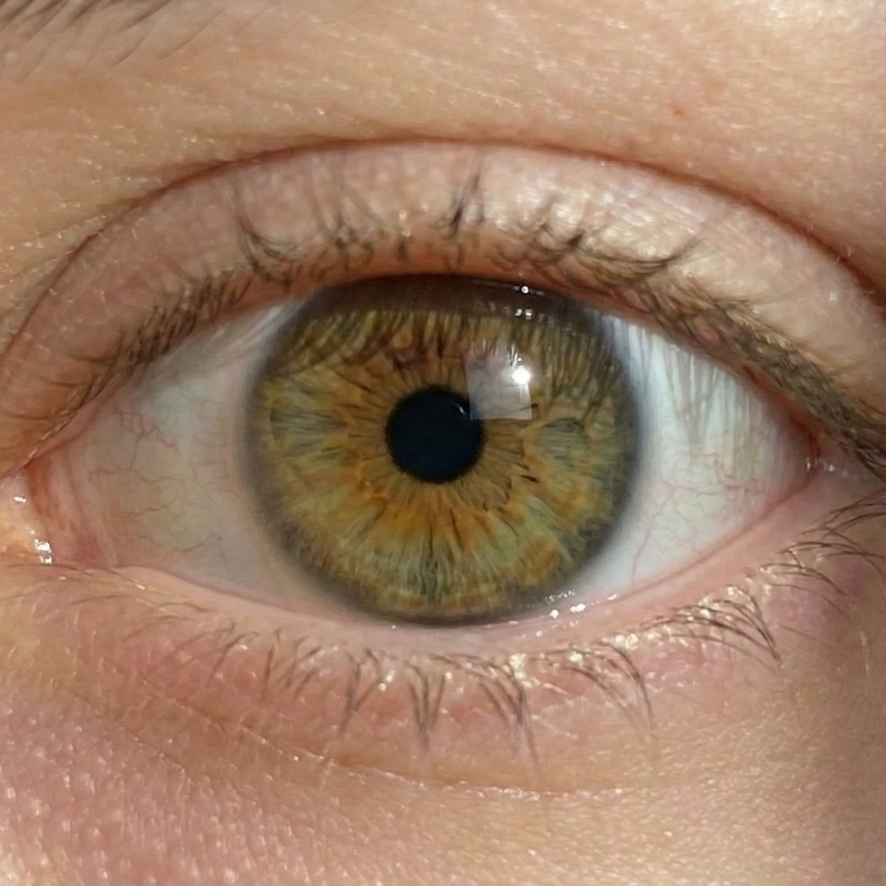
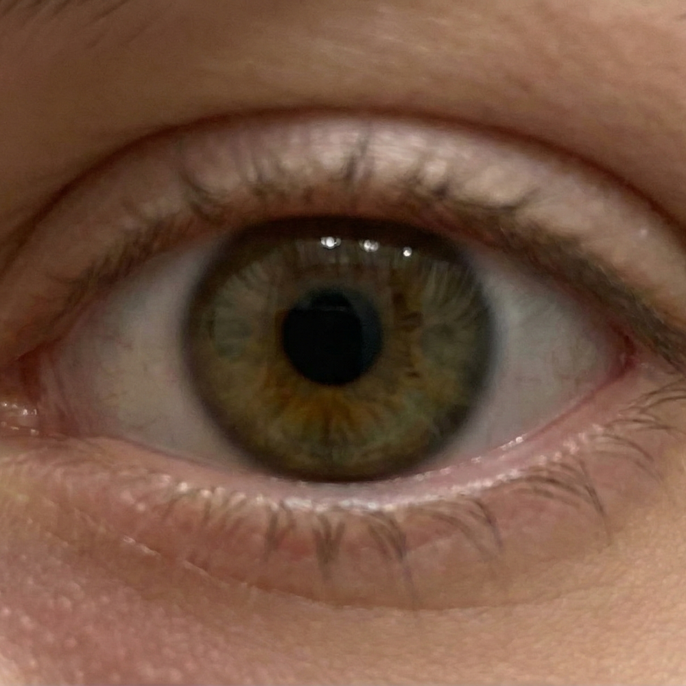
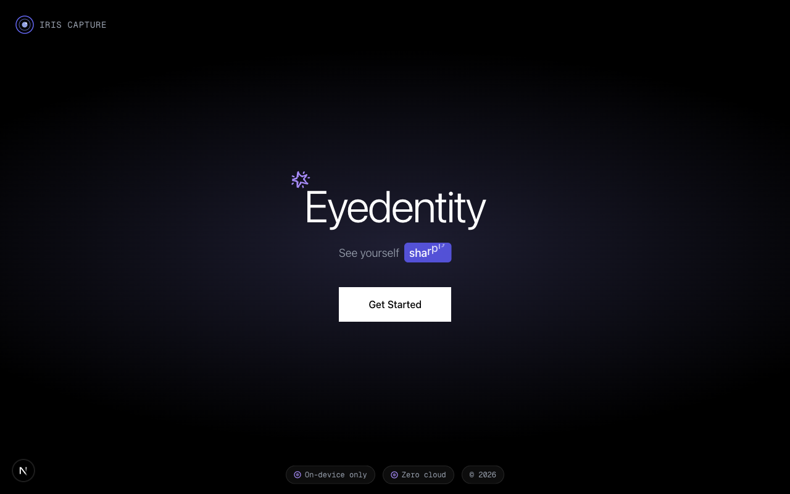

Iris Capture · On-device
Your phone captures your iris. AI segments it and upscales it 4× — revealing the crypts, furrows, and fibers your camera blurs away.


Same eye, same frame. Left: straight off the camera. Right: segmented + 4× super-resolved.
Four steps, entirely guided. The hard part — holding the shot steady and sharp — is automated.
MediaPipe tracks your eye and auto-fires the shutter only when distance, focus, and lighting are right.
Iris-SAM (a fine-tuned Segment Anything model) isolates the iris from lashes, lids, and sclera.
Real-ESRGAN super-resolves the crop, recovering texture detail at four times the resolution.
Both the HD enhanced image and your original download instantly — free, no account, no watermark.

A Next.js front end talking to a Python AI service.
Full-stack source — guided-capture front end + the AI pipeline back end. Clone and run locally in minutes; steps in the README.
pnsw123/fixed-iris-project